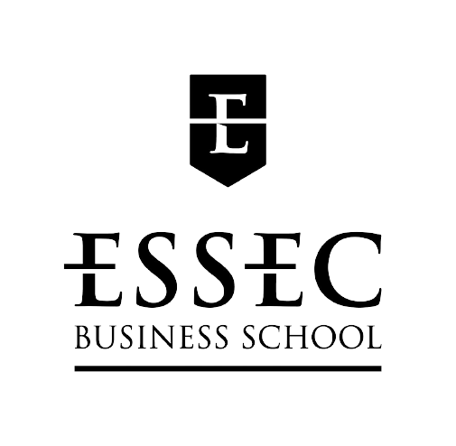
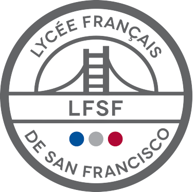
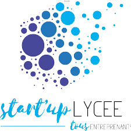

Diane Roux
Interactive Resume

WELCOME TO MY LIFE
About Me
I am a French-American woman born in Paris. Although my family is fully french, I spent 15 years in San Francisco, California. Different cultures, technology, innovation, and the startup world passionate me.
Languages | Multiculturality
Learning new languages and discovering new cultures is one of my passions.
So far, I am fluent in three languages, and I am currently learning a fourth.
- French (Native)
-
 English (Native)
English (Native) -
 Spanish (B2, Fluent)
Spanish (B2, Fluent) - Mandarin (A1, Elementary)
Education
 2020-24 | ESSEC Business School | Global Bachelor in Business Administration, English Track (Dean's List: 26th out of 597 students)
 2017-20 | Lycée Français de San Francisco | Baccalaureate Economics & Social Sciences, International Option, Math Specialty (19,17 / 20)
Professional Experience
2017-2019 | Camp Counselor, at Lycée Français de San Francisco | Organizing activities for children from 4 to 12 years old
2018 | Startup Checkster | Shadow Internship | Translation of client videos, and observation of the different roles
 2018 | Startup Lycée Competition | 3rd Place out of 15 team | 48 hours to create as a team our startup, conceptualize the application and the algorithm | Team management, market and competitor analysis, business plan
2017 and 2018 | Technovation Entrepreneurship Challenge for Girls | Semi-Finalists out of +11,000 teams | Creation of a business plan | Production of a pitch and demo video for the application we programmed | Organization of weekly meetings, preparation of the 4-month work schedule, the team’s communicator with the supervisors
LinkedInPassions | Interests
Technology & Innovation
- Junior Advisory Board Challenge, IE University | Research and pitch video on artificial intelligence in higher education (1 month - 2019)
- Techstars Demo Day, Startup Accelerator | Attended the pitch of ten startups (2019)
- One-day visits to the companies Facebook, Instagram, Dropbox & Tesla’s factory